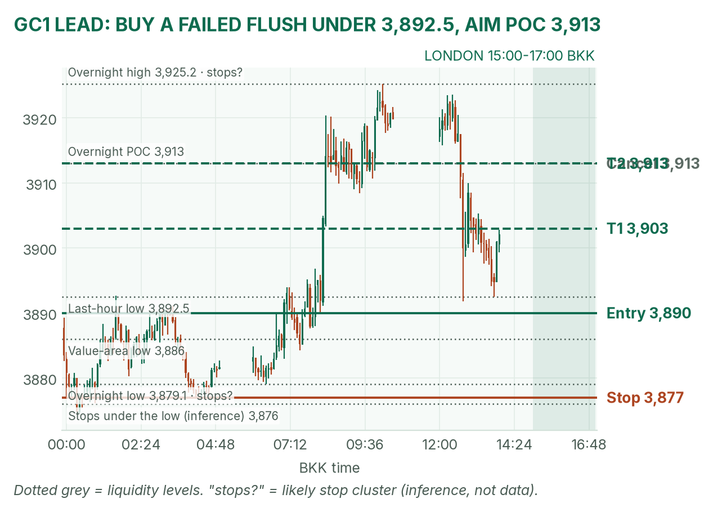
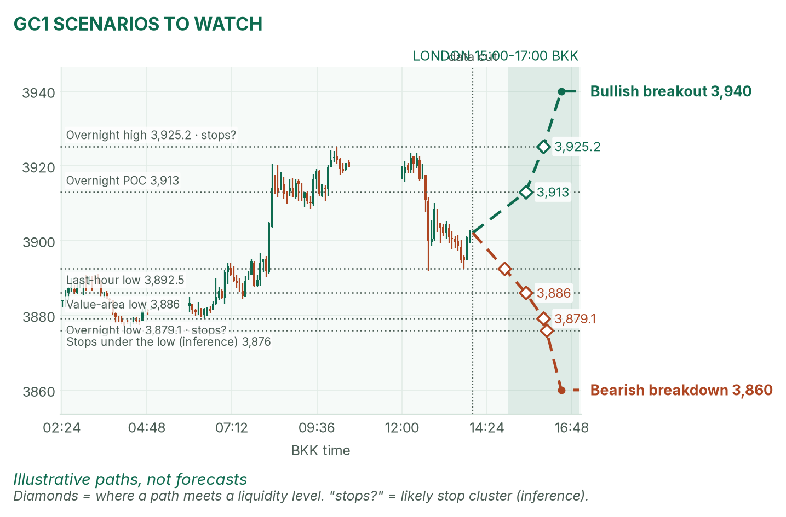
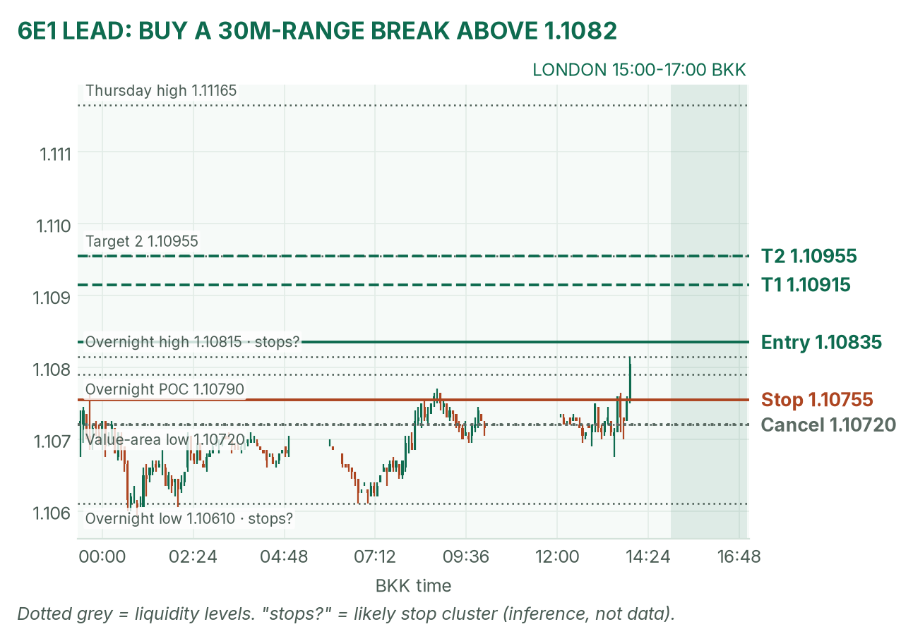
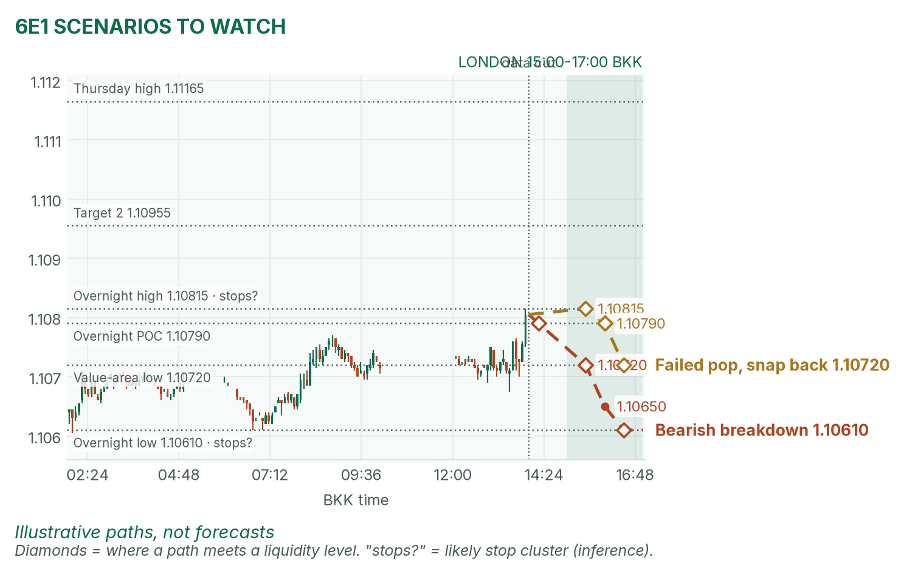

Gold bounced off 3,879 and sits mid-range; the euro is pressing its overnight high as Nvidia's CEO exit turns into a rates story.
Window 15:00–17:00 BKK (UK on GMT). Data cut 13:55 BKK: GC 3,902.1, 6E 1.10805 (Dec contracts, last completed 5-minute bar). Backup data again: TopstepX refused login, so levels come from Yahoo Finance futures bars (about 10 minutes delayed). Levels only, flat by 16:55. Ideas, not advice. April's pre-London brief (~13:15 BKK) was read.
Summary
GC: buy only a failed flush under 3,892.5, entry near 3,890, stop 3,877, targets 3,903 and 3,913. About 33% once filled.
6E: buy a break above 1.10835, stop 1.10755, targets 1.10915 and 1.10955. About 33%; it fights the strong dollar.
Euro-area GDP lands at 17:00, right at the window close. Be flat by 16:55.
The market story
Jensen Huang resigned from Nvidia, and Nasdaq futures slid to their session low. But April's read is that money rotated into Nvidia's rivals rather than fleeing stocks. The bigger weight is the Fed: a New York Fed official said more hikes are likely, the 10-year yield is 5.125%, and the dollar index sits near its highest since April 2025 (April's brief, CNBC).
Higher yields make gold, which pays no interest, costlier to hold. Gold still bounced after three down days, from 3,879.1 to 3,925.2, and now sits mid-range. The euro is flat but just tagged its overnight high. My read: gold is a range to fade; the euro is a coin-flip where the range break decides.
News (BKK)
Time
Release
Forecast
Prior
Read
17:00
Euro-area Q3 GDP, second estimate
+1.3% y/y
not verified
At the window close. Hot lifts the euro; cold feeds the dollar. No-trade zone 16:55–17:02.
20:30
US PPI (producer prices), October
+0.4% m/m, core +0.3%
not verified
After the window. Hot pushes yields up, bad for gold.
Source: April's brief (TD Economics). I removed priors I couldn't confirm.
Levels to watch
Level
GC
6E
Thursday high / low
4,005.9 / 3,856.7
1.11165 / 1.10590
Overnight high (since 06:00)
3,925.2
1.10815
Overnight value area (where about 70% of trading happened)
3,886–3,922
1.10720–1.10790
Overnight POC (busiest price)
3,913
1.10790
Last-hour low
3,892.5
1.10675
Overnight low
3,879.1
1.10610
Typical London range (last 4, median)
about 28 points
about 24 pips
Gold (GC1)
Bias: neutral to soft. The dollar and yields lean on it, but buyers defended 3,879. The London gold rule: mark the 15:00–15:30 range and fade its edges back to the POC. My volatility model expects roughly 3,889 to 3,917.
The trade: mean-reversion buy
Entry
3,888–3,892 (plan 3,890), after 15:30, only on a drop below the range and the 3,892.5 last-hour low that closes back above it on the 5-minute chart
Stop
3,877, under the 3,879.1 overnight low and the sell stops likely parked there (my inference)
Targets
1R partial 3,903 · full target 3,913 (1.8R), the POC
Cancel
Gold trades at 3,913 before any flush, or no fill by 16:30
Probability
~33%, an estimate. Basis: in 42 sessions (Aug–Oct) GC London ranges mostly failed and fading to the POC worked best (not statistically significant); the firm dollar trims it.
Why: a dip under an obvious low that reverses is a liquidity grab (sellers' stops fuel the buyers). Yesterday this exact setup stopped out as gold kept sliding; no reclaim, no trade. April partly agrees: gold is "the bounce", but yields are its headwind.

GC 5-minute bars into the 13:55 cut. The buy zone sits under the last-hour low; the stop hides below the overnight low.

Illustrative paths, not forecasts.
Scenarios to watch
Bullish breakout: a 15m close above the 3,925.2 overnight high. Aims for 3,940.
Bearish breakdown: a 15m close below 3,879.1. Aims for 3,860, near Thursday's 3,856.7 low.
Euro (6E1)
Bias: neutral. The dollar is firm, yet the euro climbed 20 pips in the last hour to its overnight high. The 6E London rule is to trade breakouts of the 15:00–15:30 range. A pip is 0.0001.
The trade: bullish range breakout
Entry
Buy stop 1.10835 after 15:30, just above the 1.10815 overnight high (use the 30m range high plus 2 pips if it is higher)
Stop
1.10755, back under the POC
Targets
1R partial 1.10915 · full target 1.10955 (1.5R), past the model's 1.1093 expected high
Cancel
A trade below 1.10720 before the fill, or no break by 16:30
Probability
~33%, an estimate. Basis: 6E London range breakouts averaged +0.31R over 26 sessions; buying against the dollar trend shades it down.
Why: price is pushing the top of the range, and the rule follows the break. April is neutral: "the euro is waiting".

6E 5-minute bars into the 13:55 cut. The entry sits just over the overnight high, where buy stops likely rest (my inference).

Illustrative paths, not forecasts.
Scenarios to watch
Bearish breakdown: a 5m close below the 1.10720 value-area low. Aims for 1.1065, then the 1.10610 overnight low.
Mean reversion: a pop over 1.10815 that fails back inside. Aims for the 1.10790 POC, then 1.10720.
NQ (not traded): about 28,341 at the cut, inside its 28,257.25–28,607.75 overnight range after the Huang news.
Before you click
ORB bases. GC London: 15:00–15:30 range, fade to POC. GC NY: 20:20 COMEX open until a 2-minute candle's volume drops below half the first two's average, fade to POC. 6E London: 15:00–15:30 range, trade breakouts. NQ NY: 21:30–21:35 range, trade breakouts.
Checklist. Room to max loss? Daily rules OK? No release within 30 minutes? With the bias? At a marked level? Setup tagged? Entry, stop, 1R partial, target set? Calm, not chasing?
Reset (60 seconds). Hands off the mouse. Breathe in 4, hold 4, out 6, five times. Name the feeling in one word. Say the plan aloud. "Eager" or "frustrated"? Wait 5 minutes.